Статья о том, как можно быстро создать HTTP-сервис в 1С:Предприятие и как выполнять его отладку.
Создание HTTP-сервиса.
Предположим, что нам нужен HTTP-сервис, который по запросу вернет список пользователей.
Выглядеть он должен следующим образом: http://localhost/base/hs/info?action=getusers
Возвращать должен строку JSON (массив объектов JSON со свойствами: имя пользователя, id пользователя):
[
{ "name": "Администратор", "id": "563e7509-83bb-11e5-80c3-00505601174a" },
{ "name": "Гость", "id": "423a9d3d-88fc-11e5-80c3-00505601174a" }
]
Чтобы это реализовать, создадим в конфигурации (или в расширении) объект HTTP-сервис. Как он будет называться – неважно, для простоты назовем его «Инфо». Корневой URL должен быть равен «info».
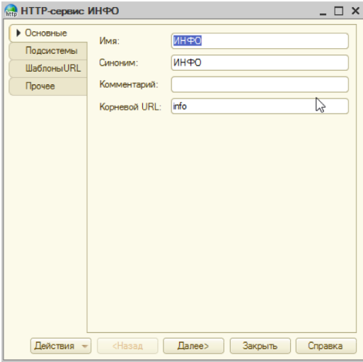
Далее добавим к нему шаблон URL, для простоты назовем его «Основной». Значение шаблона должно быть равно «/*».
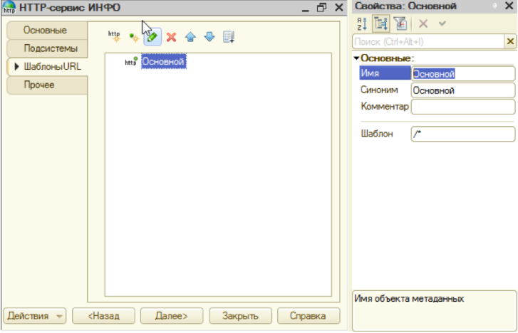
К шаблону мы добавим метод GET: имя = «GET», HTTP-метод = «GET».
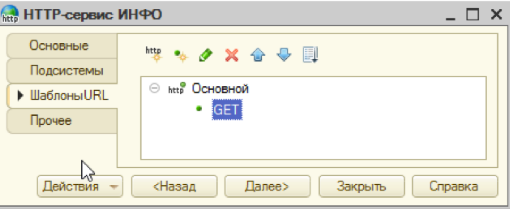
Примечание. Имя метода рекомендуется назначать по имени HTTP-метода.
Создадим обработчик HTTP-метода GET.
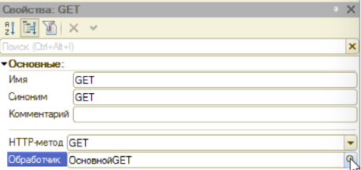
По умолчанию процедура обработчика метода заполнена кодом, возвращающим стандартный успешный HTTP ответ (код 200).
Функция ОсновнойGET(Запрос)
Ответ = Новый HTTPСервисОтвет(200);
Возврат Ответ;
КонецФункции
Скорректируем его так, чтобы он возвращал нам список пользователей.
Функция ОсновнойGET(Запрос)
Ответ = Новый HTTPСервисОтвет(200);
Если НРЕГ(Запрос.ПараметрыЗапроса.Получить("action")) = "getusers" Тогда
Ответ.УстановитьТелоИзСтроки(ВернутьСписокПользователей());
КонецЕсли;
Возврат Ответ;
КонецФункции
Функция ВернутьСписокПользователей()
Запрос = Новый Запрос;
Запрос.Текст =
"ВЫБРАТЬ
| Пользователи.Ссылка
|ИЗ
| Справочник.Пользователи КАК Пользователи
|ГДЕ
| Пользователи.Недействителен = ЛОЖЬ";
Выборка = Запрос.Выполнить().Выбрать();
ОтветМассив = Новый Массив;
Пока Выборка.Следующий() Цикл
ОтветМассив.Добавить(Новый Структура("name,id",Выборка.Ссылка.Наименование,""+Выборка.Ссылка.УникальныйИдентификатор()));
КонецЦикла;
Ответ = Новый ЗаписьJSON;
Ответ.УстановитьСтроку();
ЗаписатьJSON(Ответ,ОтветМассив); // сериализует ОтветМассив в формат JSON
Возврат Ответ.Закрыть();
КонецФункции
Проверяем результат:
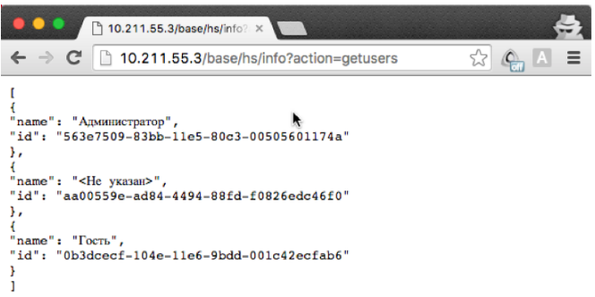
Отладка HTTP-сервиса.
Настройка подключения отладчика.
Для отладки HTTP-сервиса нужно включить (или убедиться в том, что включено) следующие флажки.
Проверим, как это все работает.
Поставим точку останова в начале функции метода GET:
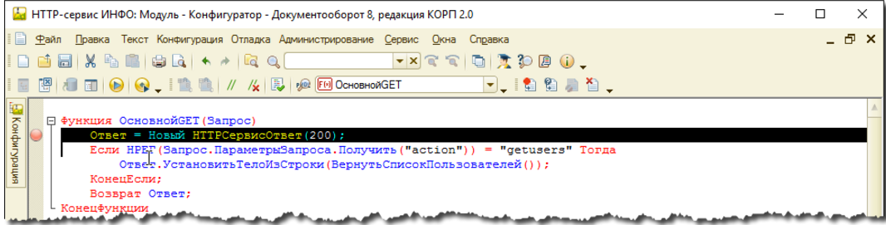
Обновляем страничку с вызовом нашего сервиса.
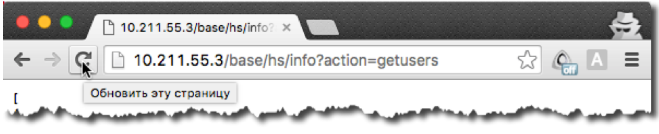
Убеждаемся, что наш отладчик успешно подключился к сеансу HTTP-сервиса:
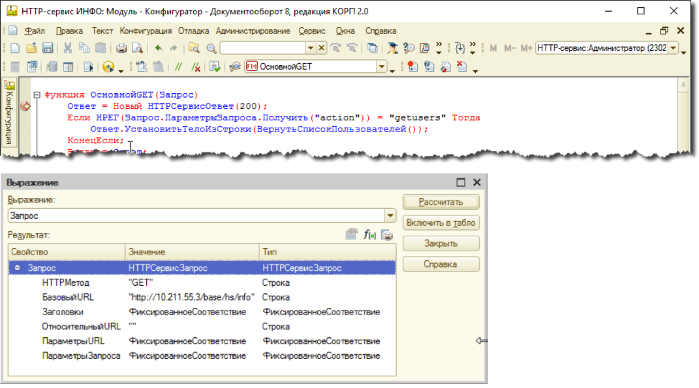
Заключение.
В этой статье рассмотрен простейший пример для быстрого создания HTTP-сервиса с целью освоения механизмов работы с ним.
В заключении хотелось бы упомянуть про возможность создания HTTP-сервисов с параметрами URL, например:
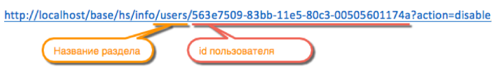
Эта возможность настраивается в ШаблонеURL HTTP-сервиса.
Для вышеуказанного примера шаблон мог бы выглядеть так: «/users/{idПользователя}/*» или так «/{Раздел}/{id}/*».
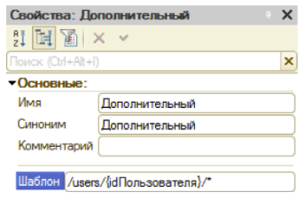
В функции обработчика метода этого шаблона параметры URL можно получить через свойство Запрос.ПараметрыURL, например так:
Запрос.ПараметрыURL[«idПользователя»]
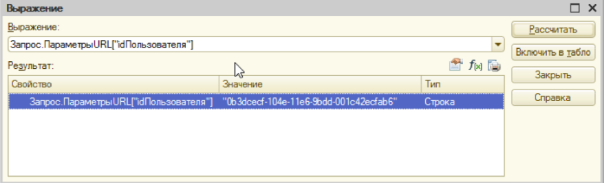
Обратите внимание на последовательность обработки шаблонов HTTP-сервиса.
В нашем примере использованы 2 шаблона:
При вызове метода http://10.211.55.3/base/hs/info/users/0b3dcecf-104e-11e6-9bdd-001c42ecfab6?action=disable сработает шаблон 1, т.к. параметры URL ему также соответствуют, а обрабатывается он первым. Чтобы этого не происходило, первый шаблон рекомендуется изменить на «/i/*» для однозначного соответствия URL шаблону.
Вызывать первый метод соответственно также придется с новым URL:
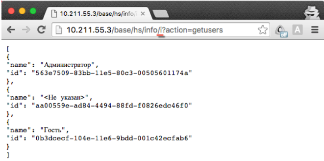